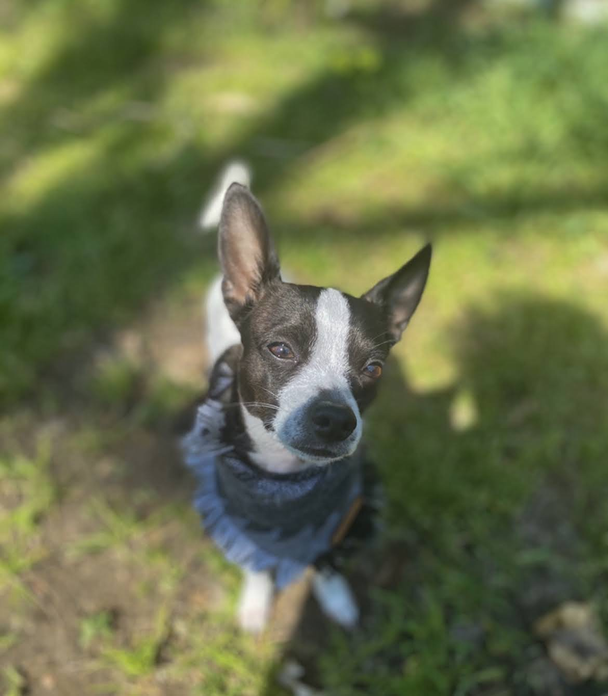
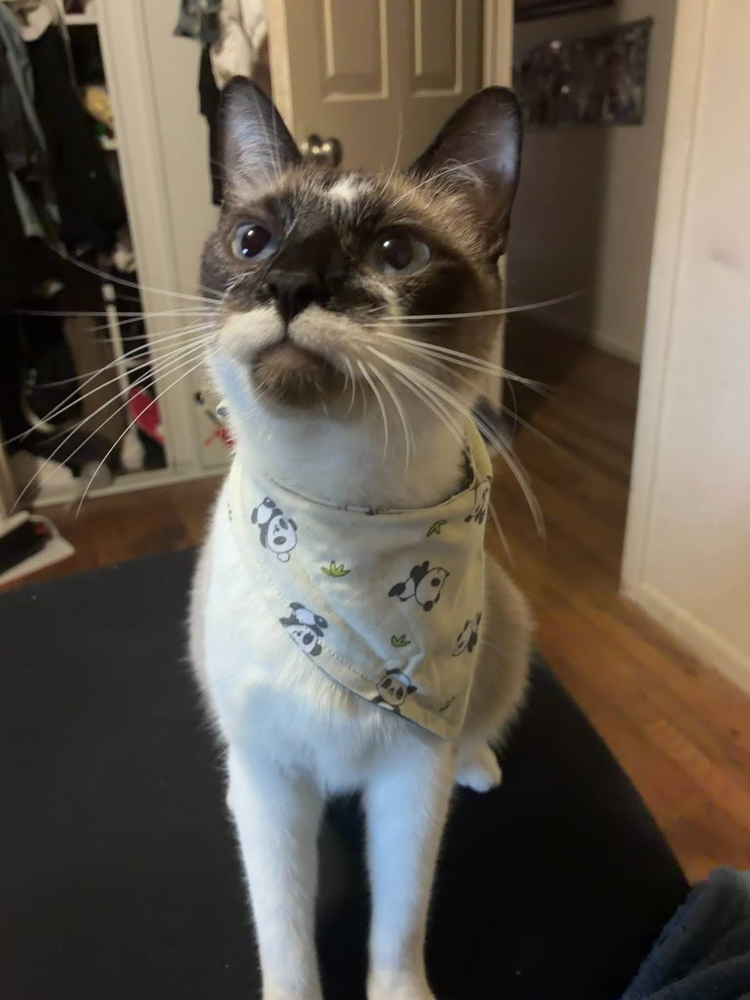
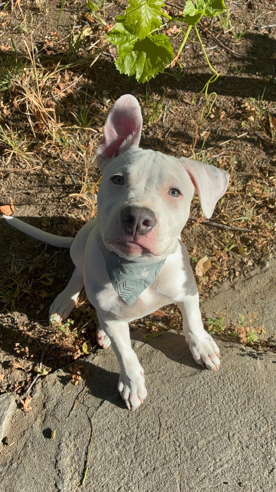

This is my very First website on which you can find, My projects, About me,fun facts about my pets and their personalites and more..... But First lets introduce my pets



This is Kilo, he is a small black and white Chihuaha who I have owned For 8 years. He is very energetic, protective and loves to model the thousands of bandanas i put on him. Kilo was given to me when one of my bestfriends dog had puppies and the mother regected him from the litter. Overall Kilo has been through thick and thin with my family and even though he can be a bit annoying with his barking I wouldnt trade him for the world.
This is Dean, Dean is named after the character Dean from the TV show "Supernatural". He is a very affectionate cat towards girls and loves to play with small stuffed toys. We like to call Dean the "supervisor" because he walks around the house like he owns it. One of Deans nicknames is Punk uh Punk because he wont hesitate to slap someone with his paws. He can be a bit rebellious and loves to get into mischief.
This is Philly, he is a Pit mix who is half Dogo arengtino. My family and I have owned him for 5 months. He is very energetic, He loves to play Fetch, and is always by my side. Philly has a strong bond with my Dad who is his favorite person and is known for his protective nature. Even though Philly looks intimidating he is very goofy and cuddly. So far Philly is learning new tricks and is becoming a well-behaved dog in the family.
take me back up